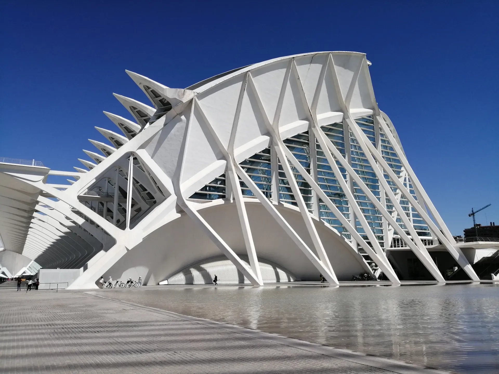
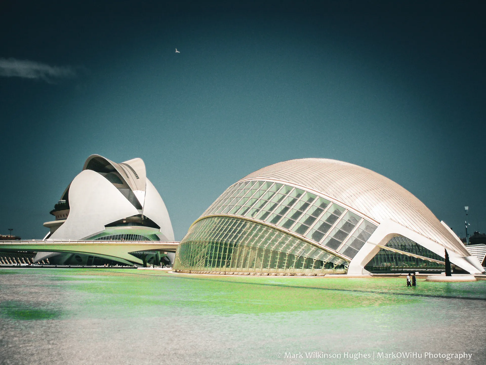
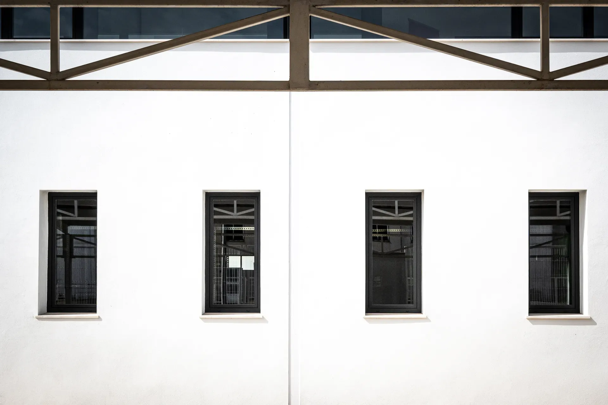
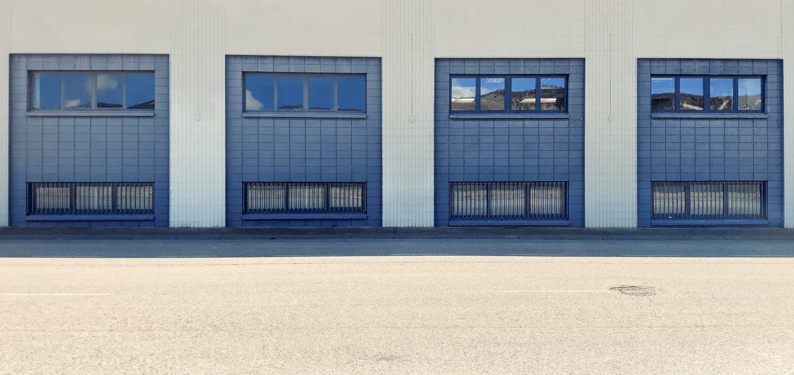
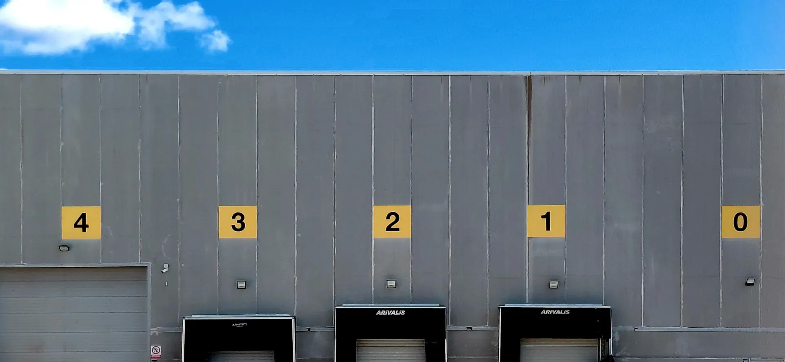
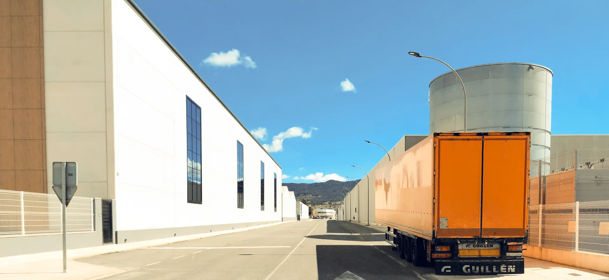
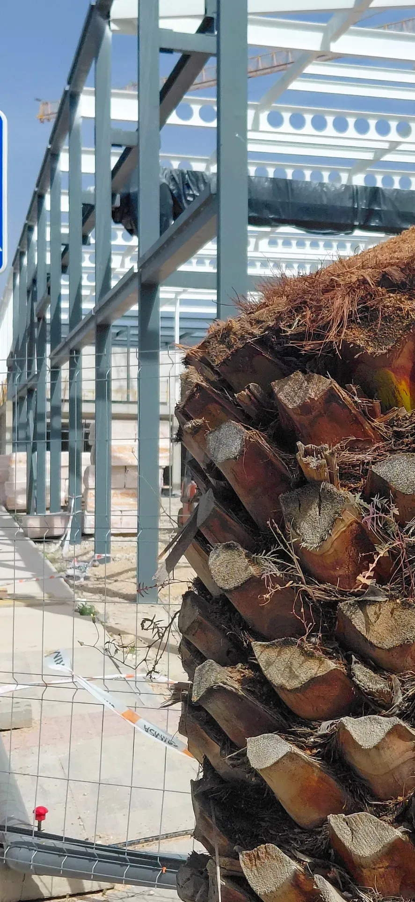
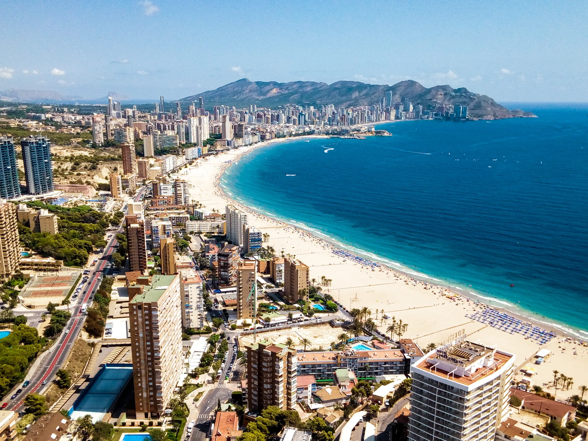
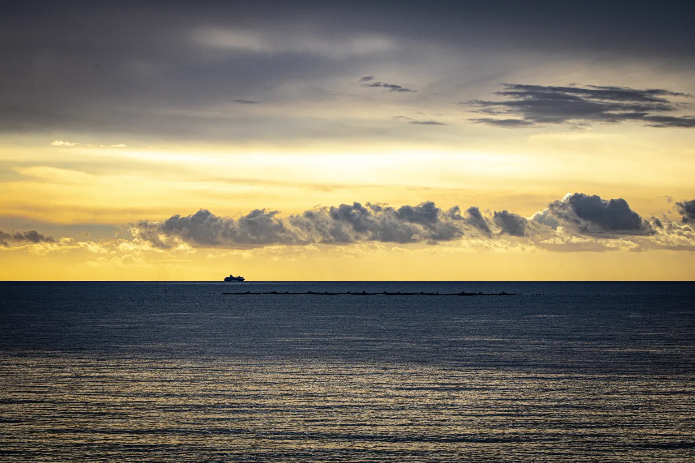
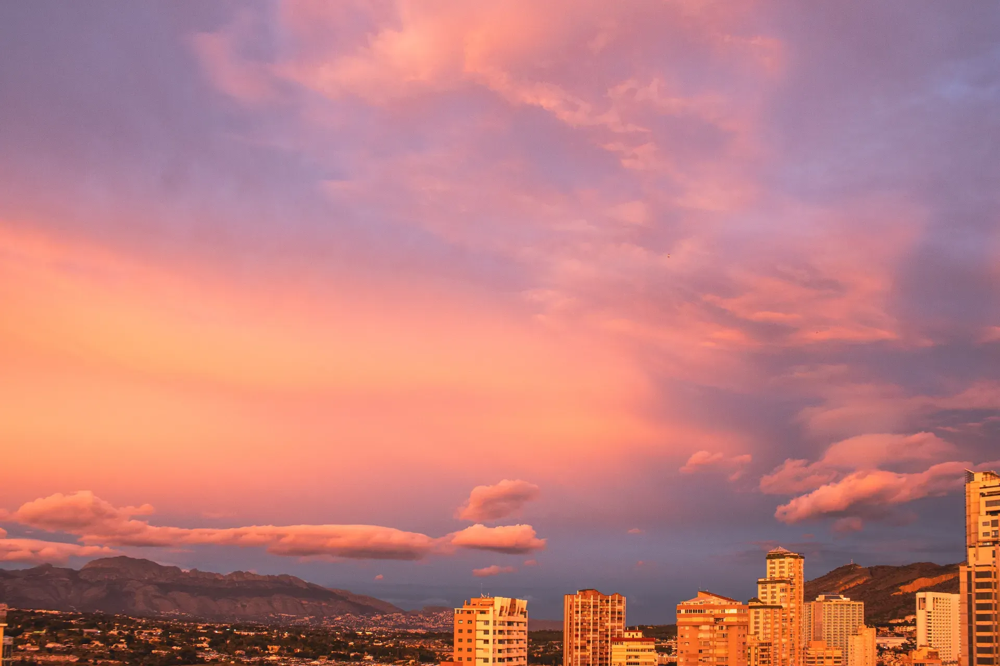

Portfolio highlights — explore full galleries via the main menu
Muestra de porfolio — explore las galerías completas en el menú principal










About • Biografía
Multidisciplinary photographer with a passion for finding beauty in both the ordinary and the overlooked.
My work ranges from capturing people and meaningful moments to exploring urban and industrial minimalism, symmetry, contemporary architecture, macro photography, street scenes, and the natural world — all with a strong emphasis on clean composition, light, and detail.
Thank you for visiting and I hope you enjoy browsing my other photography portfolios under Galleries and Links.
Fotógrafo multidisciplinar apasionado por encontrar la belleza tanto en lo cotidiano como en lo ignorado.
Mi trabajo abarca desde la captura de personas y momentos significativos hasta la exploración del minimalismo urbano e industrial, la simetría, la arquitectura contemporánea, la macrofotografía, las escenas callejeras y el mundo natural; todo ello con un firme énfasis en la limpieza de la composición, la luz y el detalle.
Gracias por su visita y espero que disfrute explorando el resto de mi fotografía en las secciones de Galerías y Enlaces.